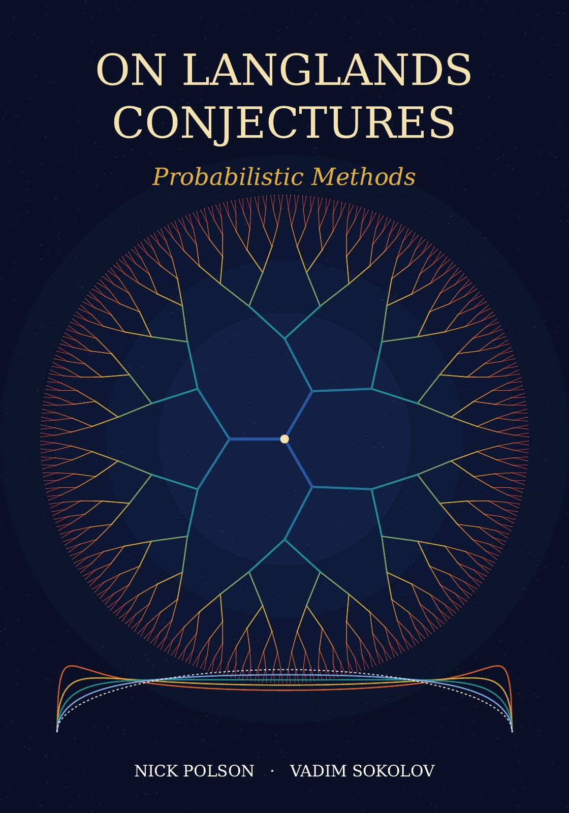

On Langlands Conjectures Probabilistic Methods
By Nick Polson and Vadim Sokolov.


Description
This monograph asks what probability can contribute to the Langlands programme, and answers on two sides. The first is a limitation, proved in the opening chapter: no argument that sees only the limiting distribution of Frobenius data can detect automorphy, because equidistribution is a consequence of functoriality, not a route to it. The second is what probability does supply: consequences of the conjectures, calibration against data, and probabilistic reformulations.
The book covers Weyl’s criterion and the Sato Tate law, random matrix models of the zeros of L functions, Kloosterman sums, random class groups and Selmer groups, Hecke operators as random walks on Bruhat Tits trees, hitting times on supersingular isogeny graphs, log correlated fields, and Bayesian inference for Sato Tate groups. At its centre is the Thorin framework: for a cuspidal automorphic representation of GL(n) over the rationals, the generalized Riemann hypothesis is equivalent to the statement that the reciprocal of an even completion of its L function is the Laplace transform of a generalized gamma convolution. Later chapters turn the same devices on reciprocity, Fermat’s last theorem, inverse Laplace transforms, random integers and the Poisson Dirichlet law, Hecke characters and Maass forms. These are reformulations: no new case of reciprocity and no Riemann hypothesis is proved.
Results new to the book include the limit of the normalised Kemeny constants of supersingular isogeny graphs, the Thorin criteria for the generalized Riemann hypothesis and for the Ramanujan conjecture, the Thorin structure of Hecke passage times, an extreme value representation of the L functions of multiplicative eta products, the Gamma process limit of the Frobenius labelled factorisation of a random integer, and a consistency theorem for the Bayesian identification of Sato Tate groups. Open computational problems close every chapter, and the scripts and data behind the numbers are in the repository.
How to cite
Polson and Sokolov (2026), On Langlands Conjectures: Probabilistic Methods, edition 1, https://doi.org/10.5281/zenodo.23419248.
@book{polsonsokolov2026langlands,
author = {Polson, Nick and Sokolov, Vadim},
title = {{On Langlands Conjectures: Probabilistic Methods}},
year = {2026},
publisher = {Independently published},
doi = {10.5281/zenodo.23419248},
url = {https://vsokolov.org/books/langlands/}
}Main results
- Equidistribution does not determine automorphy (Proposition 1.5, page 7): Sato Tate equidistribution of a sequence indexed by the primes cannot certify that it comes from a cuspidal automorphic representation of GL(2) with trivial central character, because altering such a sequence on an infinite set of primes of density zero leaves the limiting empirical averages of all continuous functions unchanged but, by Ramakrishnan’s refinement of strong multiplicity one, makes it nonautomorphic, and continuum many equidistributed sequences are not automorphic.
- Limit of the normalised Kemeny constants of supersingular isogeny graphs (Theorem 10.6, page 150): As the characteristic grows through primes congruent to 1 modulo 12, with the prime isogeny degree fixed, the mean time for simple random walk on a supersingular isogeny graph to hit a uniformly random curve is asymptotic to the number of vertices times the expected number of visits of simple random walk on the regular tree of the same degree to its starting point, so about twice the number of vertices for 2 isogenies.
- Thorin criteria for the generalized Riemann hypothesis of automorphic L functions (Theorem 14.8, page 219): The generalized Riemann hypothesis for the L function of a cuspidal automorphic representation of GL(n) over the rationals, and the Riemann hypothesis for zeta, are each equivalent to several positivity statements, among them that the reciprocal of the self dual completion, read in the squared variable, is the Laplace transform of a generalized gamma convolution whose Thorin measure sits at the squared ordinates of the zeros, and a Hankel criterion computable from central derivatives; the theorem is an equivalence that extends the first author’s 2018 paper, and it proves no case of either hypothesis.
- Thorin criterion for the Ramanujan Petersson conjecture at a prime (Corollary 15.4, page 237): For a cuspidal automorphic representation of GL(2) over the rationals with trivial central character, the Ramanujan Petersson conjecture at an unramified prime (outside the degenerate case of trace 2) holds exactly when the reciprocal of the symmetrised Euler factor, read in the squared variable, is the Laplace transform of a probability law, which is then a generalized gamma convolution whose Thorin measure is a periodic comb (Ramanujan is local Thorin, as the generalized Riemann hypothesis is global Thorin); the corollary is an equivalence and proves no case of the conjecture.
- Thorin structure of passage times of the Hecke walk on the regular tree (Theorem 15.15, page 245): The first time that continuous time simple random walk on a regular tree (the Hecke walk, on the Bruhat Tits tree when the degree is a prime plus one) reaches distance n from its start is a generalized gamma convolution whose Thorin atoms, given by the zeros of the sphere polynomials of the tree, lie in the Kesten band and follow the arcsine law as n grows, with an exact mean, a variance linear in n and a central limit theorem; Thorin support in the Kesten band is the random walk form of the Ramanujan bound, and this unconditional theorem about the tree proves no case of the Ramanujan conjecture for automorphic forms.
- Gamma process limit of the Frobenius labelled factorisation of a random integer (Theorem 20.18, page 349): As the parameter of a zeta distributed random integer decreases to one, the logarithms of its prime power factors, multiplied by the parameter minus one and labelled by any equidistributed sequence of points such as Frobenius classes or Sato Tate angles, converge in law to the jumps of a standard Gamma subordinator carrying independent labels drawn from the equidistribution law, and the labelled logarithm converges in law to a Gamma random measure, so that equidistribution becomes a Gamma process.
- Extreme value representation of L functions of eta products (Theorem 27.7, page 506): For every eta product, that is every product of the functions eta(m tau) raised to nonnegative integer powers r_m with the sum of m r_m equal to 24 (the thirty multiplicative eta products among them), the L function is entire and equals at every complex point the expectation of a regularised incomplete gamma function evaluated at an explicit maximum of exponential clocks, so its values at positive real points are probabilities strictly between zero and one that increase strictly to one.
- Consistency of Bayes factors under equidistribution (Theorem 29.1, page 536): For any deterministic sequence, such as normalised Frobenius traces, that is equidistributed for a true law with finitely many atoms and finite Kullback Leibler divergence from one candidate law, and with a log likelihood ratio continuous off the atoms, the clipped log Bayes factor between two candidate laws is asymptotically linear in the number of observations, and as the clipping level grows its slope tends to the difference of the divergences of the true law from the two candidates, with no independence assumed.
All 178 results of the book (130 proved, 5 conditional, 43 open) are on the page Results by chapter, each with its statement, status and number.
License: Text, figures and PDF: CC BY 4.0. Code: MIT.
This page is generated from the book’s repository (main). The numbers and pages are those of the PDF, version 1.0.0.